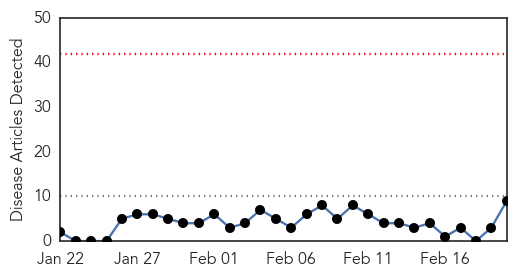
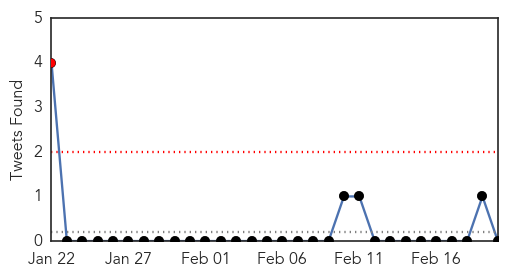
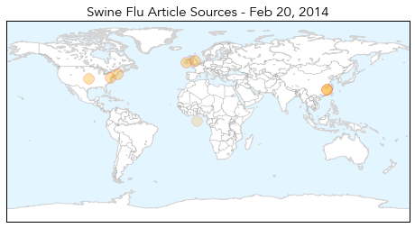
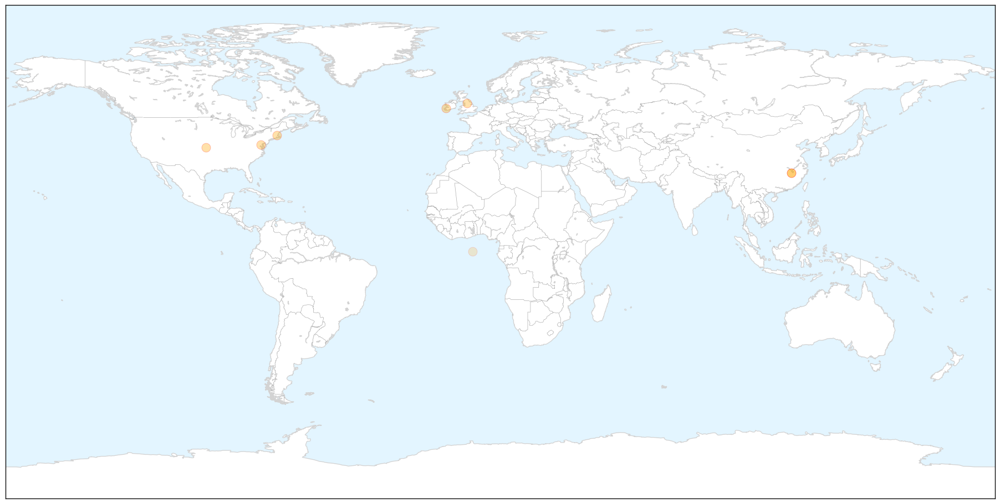
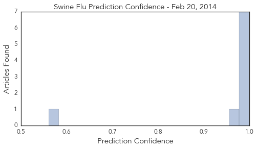

Swine Flu
30-Day Web Trend
0 alerts, 0 warnings

30-Day Twitter Trend
1 alerts, 0 warnings

Article Locations

X

Article Confidences
Top Articles:
- 1.000
- Swine flu case confirmed at Cork University Hospital
- 1.000
- Flu virus forces CUH to limit visitor numbers
- 1.000
- HeraldNet.com - Nation & World
- 1.000
- H1N1 flu returns
- 0.999
- CDC: Flu hitting younger populations this season
- 0.993
- Flu cases in the UK hit an all time low - because we've all been stuck indoors
- 0.989
- The Portland Press Herald / Maine Sunday Telegram
- 0.971
- Strict visitor restrictions at Cork University Maternity Hospital following swine flu outbreak
- 0.561
- U.S. Prosecutors Broaden Criminal Investigation of North Carolina Environmental Regulators - FairWarning
Top Tweets:
-
No tweets found for Feb 20, 2014
Meningitis
30-Day Web Trend
14 alerts, 0 warnings

30-Day Twitter Trend
0 alerts, 0 warnings

Article Locations

Article Confidences

Top Articles:
- 0.989
- Meningitis vs. Meningococcal: Differences in Deadly Diseases
- 0.889
- Meningococcal disease outbreak feared at East Chapel Hill High School
- 0.800
- Benin trial shows vaccine need not be kept cold, can cost less
- 0.780
- NC high school student dies from meningococcal disease
- 0.769
- The Daily Reflector
- 0.701
- Memorial Set for Suspected Meningococcal Disease Victim
- 0.656
- Breaking the cold chain: Why ditching refrigerators is a big deal for Africa
- 0.585
- Officials take precautions after student's death from meningococcal disease
Top Tweets:
-
No tweets found for Feb 20, 2014